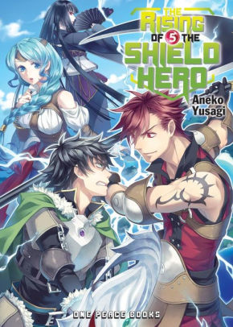

My Favourite Video Games
September 28, 2020 by Shaquan Robinson

Hello everyone, in this blog post I discuss my favourite video games and why. Currently, I don't play much video games as I prefer indulging in my other hobbies and interests. A popular video game I used to play frequently was League of Legends (LoL). League of Legends is a team-based strategy game where two teams of five powerful champions face off to destroy the other's base. The game has a variety of characters and is updated fortnightly, adding new content which makes it fresh and enjoyable. LoL is free with limited restrictions, making it easily assessible to play and the large and creative playerbase allows other avenues to enjoy the game through fan art and memes.
My favourite game franchise of all time is Pokémon. Pokémon is a role-playing game based around building a small team of monsters to battle other monsters and trainers in a quest to become the best. One of the main reasons I love Pokémon is because of childhood nostalgia. I can vividly remember enjoying myself when I played as a child, with similar feelings when playing now. Another reason for my love of Pokémon are the game mechanics and the competitive elements. The game is straightforward in battle style but becomes complex with the plethora of pokemon to choose from to create a team of 6 and the varying moves and items to use to overwhelm your opponent.
My Favourite Light Novels
September 20, 2020 by Shaquan Robinson
Hello everyone, in this blog post I discuss my favourite light novels and why. My favourite light novel is a japanese novel called Konosuba. The synopsis is of a young boy who was sent to a fantasy game-like world after his death, reluctantly adventuring in a dysfunctional party to defeat the demon king and save the world. It is hands down one of the funniest light novels I've ever read and the story progression and character development is well done.
My second favourite light novel is the Rising of the Shield hero, another japanese light novel. Similar to the last one where a young boy is transported to another world and on a mission to defeat the demon king. Hovever, he was betrayed and is now on a conquest for revenge. More serious than the previous light novel and the world building is amazing with great fighting scenes.